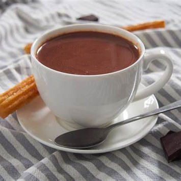
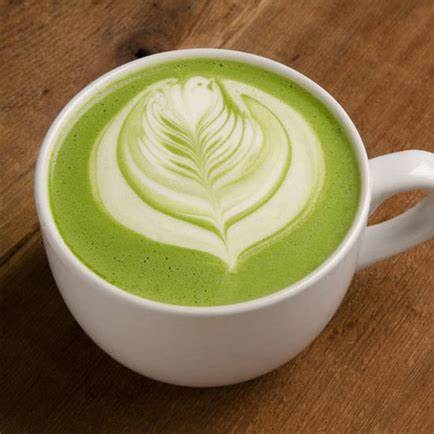
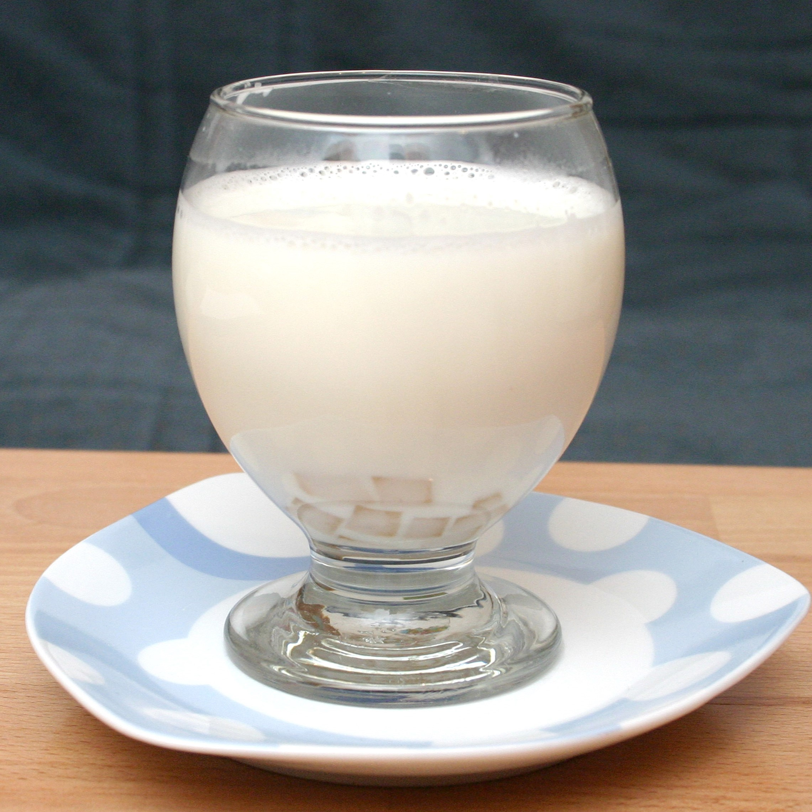
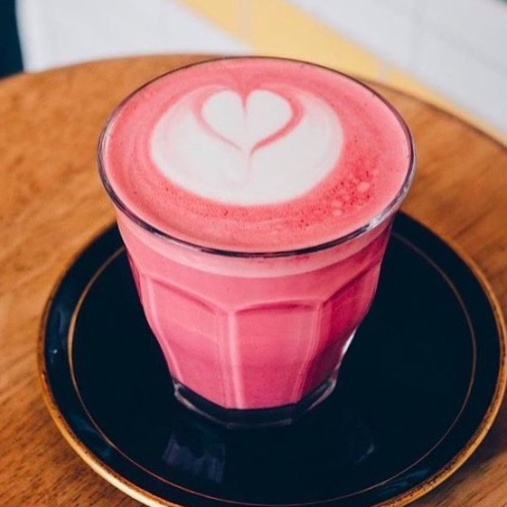
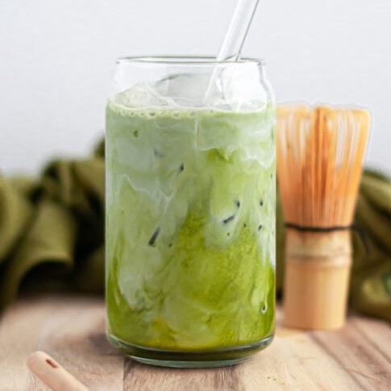
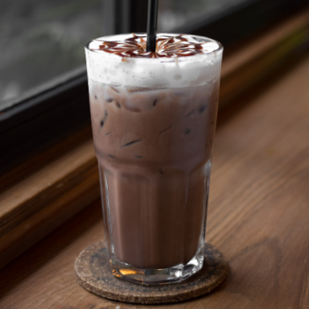
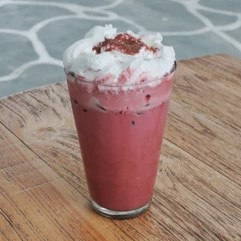
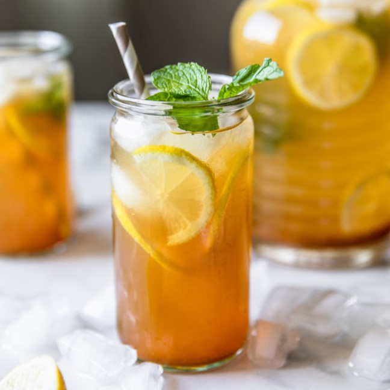
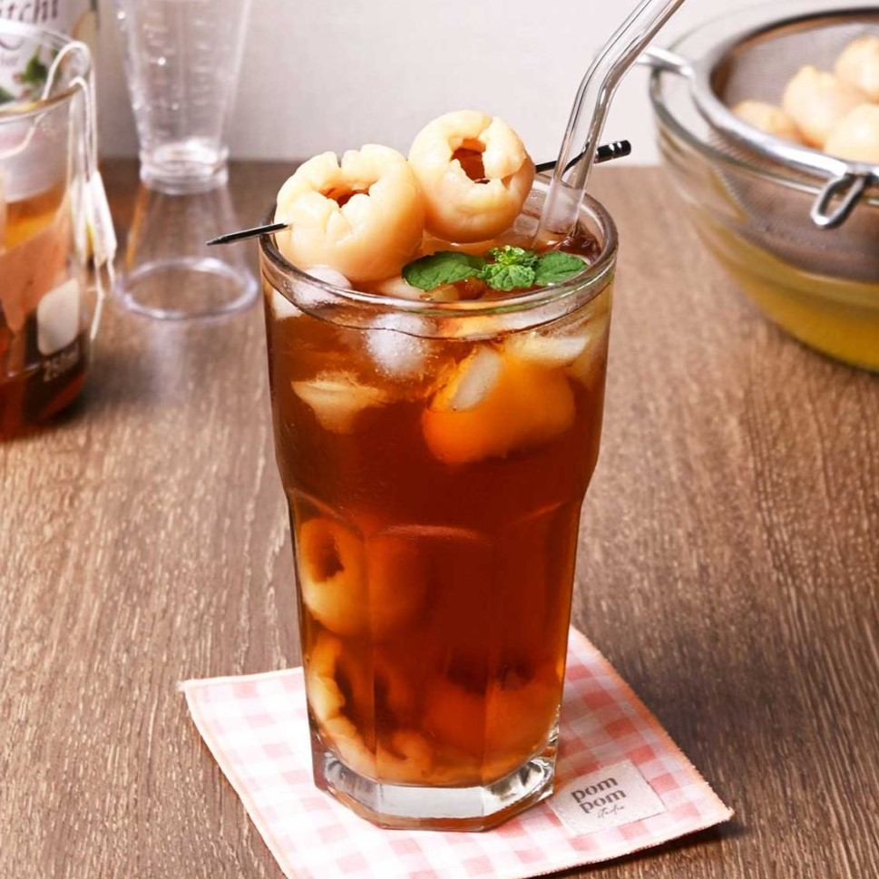
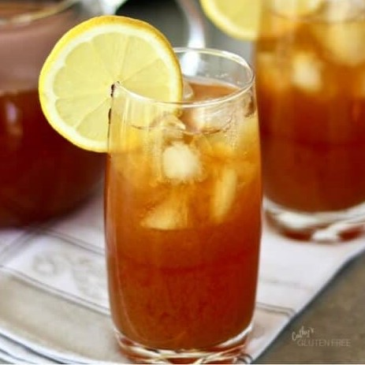

HOT NON COFFEE

Hot Chocolate
Minuman cokelat panas yang creamy dan manis, sering dihias dengan whipped cream atau marshmallow di atasnya.

Matcha Latte
Minuman berbahan dasar bubuk teh hijau (matcha) yang dicampur dengan susu steamed, menghasilkan rasa khas teh hijau yang lembut dan creamy.

Hot Chai Latte
Kombinasi teh hitam dengan rempah-rempah seperti kayu manis, jahe, cengkeh, dan kapulaga, dicampur dengan susu steamed.
Hot Honey Lemon
Minuman hangat yang menyegarkan, terbuat dari campuran air panas, perasan lemon, dan madu, cocok untuk meredakan tenggorokan.

Hot Milk
Susu panas sederhana yang kadang diberi tambahan madu, sirup vanila, atau kayu manis untuk variasi rasa.

Hot Red Velvet
Minuman berbasis bubuk red velvet yang dicampur dengan susu steamed, menghasilkan rasa manis dengan aroma khas cokelat dan warna merah yang menarik.
COLD NON COFFEE

Iced Matcha Latte
Kombinasi bubuk teh hijau (matcha), susu dingin, dan es batu. Rasanya segar dengan aroma khas matcha.

Iced Chocolate
Minuman cokelat dingin yang creamy dan manis, sering dihias dengan whipped cream atau saus cokelat.

Iced Red Velvet
Campuran bubuk red velvet, susu dingin, dan es batu. Rasanya manis dengan warna merah yang menggoda.

Iced Lemon Tea
Teh hitam dingin yang diberi perasan lemon segar dan sedikit gula, menghasilkan rasa segar yang cocok untuk hari panas.

Iced Lychee Tea
Teh dingin dengan tambahan rasa leci, sering disajikan dengan buah leci asli dan es batu untuk sensasi tropis.

Iced Honey Lemon
Campuran air lemon dingin dengan madu dan es batu, memberikan rasa manis alami dan segar yang menyegarkan.